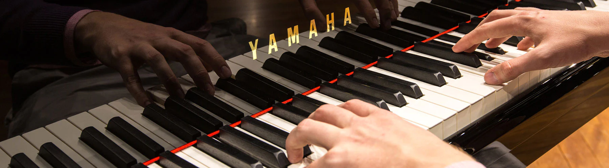
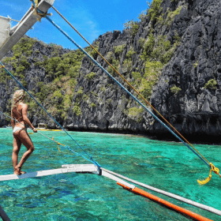

How I stay committed to learning
I like to think of myself as a lifelong learner. I used to spend hours and hours learning,
then try to create simple projects using what I learned or work new techniques into existing projects.
While that was fun, I felt like it would be helpful to share what I was learning and most things about
my journey with the world.
How I got started
I started simple and gradually grew my learning journal site. I would take notes about what I was learning.
After each learning session, I'd use my notes to not only reflect on what I learned but also write short
summaries of what I learned using my own words.
That helped me grok what I was learning, and I realized that posting my learning summaries was also helping others learn and stay motivated.

12 JANUARY 2015
This Piano Warm Up Routine Is Really Important
Did you know that you are an athlete as well as a pianist? Musicians are small-muscle
athletes. There are physical therapists who are specifically trained to work with musicians and the physical
issues that arise during their years of playing that are unique to being this type of athlete.

23 JULY 2022
The Ideal Itinerary for Visiting the Philippines
It's difficult to imagine a more beautiful country than the Philippines, with its white
sand beaches, bath-temperature water, and incredibly friendly locals. These islands, 7,107 in total, are worth
deviating from the usual banana pancake trail in Thailand, Cambodia, Laos, and Vietnam!
07 JANUARY 2023
Best Libraries in the World
We obviously love libraries here at The Best Colleges because education is our main focus. We adore all
libraries, whether they are college libraries, public libraries, or private libraries. For those of you who
aren't "of a certain age," a library is a quiet building filled with books and reference materials dating back
to Ye Olde Pre-Internet Times.